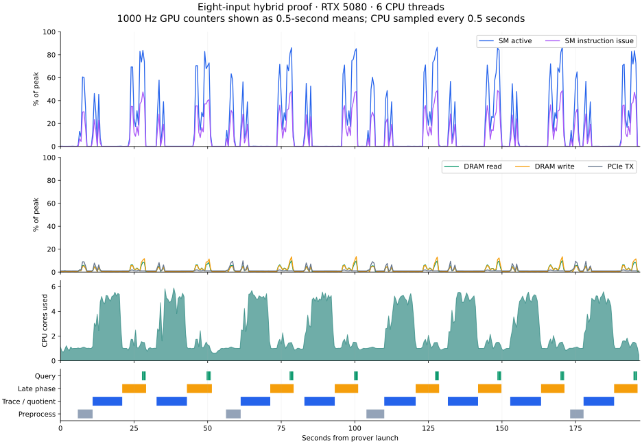

9 October 2026 · Linux hybrid prover · RTX 5080 desktop · eight inputs · six Rayon threads
The prover spends most of its time waiting on host work
The GPU was largely idle for 151.6 of 196.9 seconds. The CPU was active during 99.9% of those intervals. When the GPU was busy, DRAM read and write bandwidth averaged 7.8% and 7.6% of peak.
This workload is primarily constrained by CPU work and host orchestration. Its GPU work shows no sustained VRAM-bandwidth saturation. High SM activity with moderate instruction issue and low DRAM traffic is consistent with arithmetic or instruction-latency limits during kernels; these counters do not identify a specific execution-pipeline or cache bottleneck.
77.0%GPU largely idle
151.4 sGPU idle while CPU active
58.4 sQuotient CPU wall span
8 / 8Fresh proofs; root CPU audit passed

Hardware samples at 1000 Hz, displayed as half-second means. CPU activity comes from process-tree CPU ticks sampled every half second. Query phases nest inside the late phase.
Compute and bandwidth measurements
| Metric | Whole proof mean | Mean with SM activity >50% | 95th percentile with SM activity >50% |
|---|
| SM activity | 16.0% | 97.5% | 100.0% |
| SM instruction issue | 8.2% | 50.3% | 59.0% |
| DRAM read bandwidth | 1.8% | 7.8% | 14.0% |
| DRAM write bandwidth | 1.8% | 7.6% | 13.0% |
| PCIe receive | 1.5% | 0.7% | 1.0% |
| PCIe transmit | 1.7% | 1.1% | 1.0% |
“Busy” here means SM activity above 50%, covering 31.3 seconds. “Largely idle” means GR activity at or below 2%; the desktop compositor produces a small baseline. DRAM percentages are measured hardware bandwidth, separate from nvidia-smi utilization.memory. Read and write percentages are shown separately. Device-wide metrics include display graphics.
DRAM reads never reached 80% of peak. Writes exceeded 80% for 0.1 seconds. Short transfer bursts occur, but sustained memory bandwidth is not the end-to-end limit.
Where the CPU is holding up progress
| Admitted phase | Wall time | GPU largely idle | Mean CPU cores | Permit wait |
|---|
| preprocessing | 20.6 s | 16.3 s | 1.0 | 0.0 s |
| query reconstruction | 10.0 s | 1.1 s | 1.5 | 0.0 s |
| quotient commitment through queries | 64.3 s | 33.5 s | 1.3 | 0.0 s |
| trace and quotient | 82.5 s | 73.5 s | 4.3 | 0.0 s |
The trace-and-quotient phase consumes several CPU cores while leaving the GPU idle for most of its duration. CPU leaf samples point to extension-field multiplication (24.5%), symbolic expression resolution (14.8%), and machine AIR constraint evaluation (8.9%). These sample shares are approximate and measure CPU execution, not elapsed wall-time shares.
| Measurement | Seconds | Meaning |
|---|
| Quotient polynomial | 58.4 | CPU wall span; inclusive |
| Preprocessing setup | 20.6 | CPU wall span; inclusive |
| Batch inversions | 7.5 | Inclusive span total |
| GPU readback decoding | 8.8 | Host wall time |
| Opening marshaling | 3.1 | Host wall time |
| LDE transforms | 17.6 | OpenCL device time |
| LDE sponge | 8.6 | OpenCL device time |
These timings overlap and are not an additive breakdown. GPU device durations use OpenCL event timestamps; host spans use host clocks. No unmeasured clock alignment is assumed between them.
What this means for concurrency
There is substantial idle GPU capacity that another job could use, but another job must also obtain CPU time and memory-phase admission. The earlier four-worker test held one global heavy-phase permit; individual workers waited 344–467 seconds for it. Adding workers alone does not remove that bottleneck.
| Prior configuration | Eight-input jobs | Batch elapsed | Jobs/hour |
|---|
| New-binary 1+1 | 2 | 427.5 s | 16.8 |
| New-binary 2+1 | 3 | 551.0 s | 19.6 |
| Four-worker 2+2 | 4 | 809.4 s | 17.8 |
The earlier 2+1 arrangement delivered 19.6 jobs/hour; 2+2 delivered 17.8, a 9.2% reduction. The profiled single-worker run has no permit contention. These different worker counts and hardware availability are not controlled timing comparisons.
Optimization priorities are CPU quotient and constraint evaluation, host readback decoding and marshaling, and shorter memory-permit hold times when the live-memory bound allows them. The GPU-only worker should be evaluated against these measured CPU costs. Simply adding VRAM bandwidth would address little of the measured idle time.
Validation and repeatability
| Capture | Prover elapsed | GPU largely idle | Mean busy DRAM read / write | Root CPU audit |
|---|
| Initial CPU sampling | 196.3 s | 76.7% | 7.8% / 7.6% | Passed |
| Lower CPU sampling | 196.9 s | 77.0% | 7.8% / 7.6% | Passed |
The second capture lowers CPU stack-sampling frequency while retaining 1000 Hz GPU metrics. Lost CPU profiling records fell from 9,532 to 3; the second capture contains 87,132 running CPU samples. CPU utilization comes from independent process counters, so it does not rely on the incomplete Nsight CPU timeline. Both jobs produced eight fresh recursive proofs and passed independent CPU root audits. The final run took 204.0 seconds including capture/report overhead and audit, with a sampled fleet RAM peak of 20.8 GiB. Memory-limit and OOM counters remained zero; GPU processes and private scratch were cleaned up, and slice limits were restored.
Only the desktop RTX 5080 was visible after reboot. The laptop GPU used in the earlier dual-GPU tests was absent, so this is a single-GPU profile. Nsight runtime overhead was not independently calibrated against an unprofiled control.
Capture quality and limitations
The final capture has 197,183 GPU sample instants and 0 gaps longer than two sample periods. 396 NVTX anchors align Nsight and CLOCK_MONOTONIC; their observed timestamp-offset envelope is 109.2 µs wide (empirical maximum half-width 54.6 µs), below the 1 ms GPU sampling interval.
CPU kernel stacks are restricted by perf_event_paranoid=2; user-space stacks and direct CPU ticks work. OpenCL and host timeline buffers each retain 65,536 intervals and dropped 38,420 and 130,917 additional intervals. Complete cumulative operation counters remain available; partial event unions are not treated as a full trace. Nsight Systems cannot provide OpenCL per-kernel roofline or detailed stall reasons.
- Unable to collect CPU kernel IP/backtrace samples. perf event paranoid level is 2.
Change the paranoid level to 1 to enable CPU kernel sample collection.
Try
sudo sh -c 'echo 1 >/proc/sys/kernel/perf_event_paranoid'
to change the paranoid level to 1.
- Dwarf backtraces collected.
- GPU Metrics [0]: Using 7680 KiB record buffer
- Some events ( 3) were lost (including Perf: 3). Certain charts (including CPU utilization) on the timeline may display incorrect data. Try to decrease sampling rate and start a new profiling session.
- Number of IP samples collected: 87179.
- Process 34681, Thread 34690, lost 1 CPU profiling records (e.g. CPU Instruction Pointer samples or CPU context switch tracing data). This thread's timeline may be inaccurate.
- Process 34681, Thread 34686, lost 1 CPU profiling records (e.g. CPU Instruction Pointer samples or CPU context switch tracing data). This thread's timeline may be inaccurate.
- Process 34681, Thread 34685, lost 1 CPU profiling records (e.g. CPU Instruction Pointer samples or CPU context switch tracing data). This thread's timeline may be inaccurate.
Evidence and reproduction
Final measured evidence (JSON) · First capture (JSON) · Standalone timeline (SVG) · Prior four-worker report
Frozen prover SHA-256: b9c5718915d09b6286960394af0087670c4394d1801c1653c0d33a9ea8d27f5d
Raw capture: /home/access/code/lattica/.tools/worktrees/linux-memory-concurrency/lattica-prover-p3/target/linux-gpu-profile-20261009/desktop-single-04. Runner: scripts/block-v2-linux-phase-run.py --profile-clock-library <clock.so>. Analyzer: scripts/analyze-linux-gpu-profile.py. The invocation and pinned controller source hashes are stored alongside the raw run. All changes are isolated to the linux-memory-concurrency worktree.